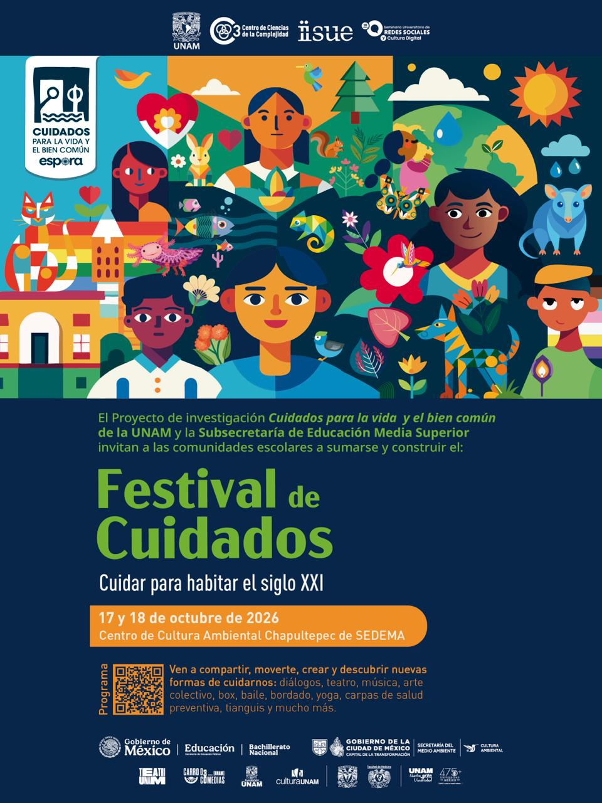

Inauguración / Cuidar para habitar el siglo XXI
Participan: Estela Roselló, Tania Rodríguez Mora y Felipe Zámano
Modera: Patricia Peña

El Festival de Cuidados fue un espacio para reflexionar
sobre el cuidado como una forma de estar y habitar el
mundo. Promovió conversaciones, experiencias y acciones
colectivas para construir comunidades más sanas,
solidarias y equitativas.
En su primera edición, reunió a la UNAM, la SEP y diversas
instituciones comprometidas con el bienestar, el medio
ambiente y la cultura de paz.
Instancias aliadas:


Promovió la atención a las emociones, el cuerpo y la mente a través de talleres, charlas y actividades recreativas.
Fomentó la relación consciente con la naturaleza, el reciclaje, el consumo responsable y el respeto por el entorno.
Buscó fortalecer el respeto, la empatía y la convivencia pacífica en nuestras comunidades.
Entrada libre

Participan: Estela Roselló, Tania Rodríguez Mora y Felipe Zámano
Modera: Patricia Peña
Participan: Gabriela de la Cruz, Miguel Agustín López y Sugeily Vilchis Arriola
Modera: Judith Pérez
Participan: Akiko Bonilla, Alejandra Rodríguez y Ariadna Jasso
Modera: Mercedes de Agüero
Participan: Pilar Gilardi, Itzcóatl Jacinto y Bernardo Bastien
Modera: María Zorrilla
Participan: Celeste Cruz Avilés, Eli Domínguez Álvarez Icaza y Julia Luna
Modera: Jeanett Reynoso Noverón
Participan: Ilana Borovoy, Paulina Uribe y Tamara Sofía Gutiérrez Castillo
Modera: Asunción Pineda
Participan: Pablo de la Madrid, Mikel Armenta y Samuel Francisco García
Modera: Felipe Zámano
Participan: Hugo Garciamarín, Alfredo Ávila y Carmen Mejía
Modera: Rocío Amador
Participan: Francisco Cardoso, María Gourlay y Luz Angélica Camacho
Modera: Tere Álvarez Icaza
Participan: Mónica Adriana Mendoza, Adriano Trillo y León Felipe Mendoza Cuevas
Modera: Janneth Trejo
Participan: Sofía M. Provencio, Sherlyn Montserrat Segundo García, Nidia Estrella Montalvo Rosales y Héctor Arredondo
Modera: Felipe Zámano
Participan: José Gotés, Perla Yanelli Fernández Silva e Itzcóatl Jacinto
Modera: Patricia Peña
Participan: Tania Rodríguez, María del Rocío Juárez Nogueira y Estela Roselló
Entérate de las últimas novedades, actividades y momentos especiales del festival a través de nuestro Instagram
Síguenos en Instagram